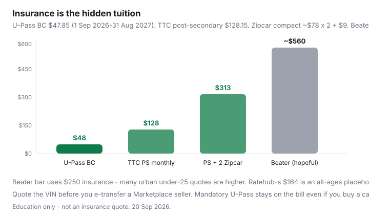

Transportation · Students
How Canadian students can cut commuting costs: U-Pass, transit, and shared cars
The expensive student car is advertised as a $3,500 Facebook Marketplace win. The insurance quote arrives, parking at residence is $80–$160/month, and someone still needs winter tires. Meanwhile the student union already billed a U-Pass or a post-secondary PRESTO product that makes the Civic optional. This guide is the semester chalkboard: campus transit products, the young-driver insurance wall, bikes, co-op travel, and when a shared car is the grown-up substitute for a plate in your name.
Related: Compass / U-Pass, TTC post-secondary monthly, e-bike vs pass, student grocery days.
Disclosure: Student insurance quote tools and e-bike deals are opportunity types. Saving Optimizer may earn a commission if we later add partner links. We do not currently claim insurer or bike-shop partnerships. This is not a quote or a campus-policy interpretation.
Key takeaways
- If a U-Pass or post-secondary pass is in your fees, that is the default commute. U-Pass BC is $47.85/month from 1 Sep 2026–31 Aug 2027. TTC post-secondary monthly is $128.15 after the 1 Sep 2026 cap change.
- A cheap used car loses to insurance more often than it loses to rust. Get a quote before you e-transfer the seller.
- Car-share or a weekend rental covers IKEA and the airport. Ownership covers ego.
- Bikes and e-bikes win short campus hops; budget theft, lights, and two winter months on transit.
- Ask the student union about the products that never make the Instagram ad.
U-Pass and post-secondary transit products by region
| Region | Typical student product | 2026 figure to verify | Do not also buy |
|---|---|---|---|
| Metro Vancouver | U-Pass BC on Adult Compass | $47.85/month (1 Sep 2026–31 Aug 2027) | Adult 1-zone monthly (~$117 context in the Compass guide) |
| Toronto / TTC | Post-secondary monthly PRESTO | $128.15/month; adult PAYG $3.30; cap $155.10 | Adult 12-Month at $143 if you qualify for post-secondary |
| Montréal | STM student Opus / university titles | Confirm STM + school (often cheaper than adult) | A full adult monthly on a second card |
| Other campuses | U-Pass style deals with the local operator | Student-union PDF for this term | Assuming last year’s price |
GO + TTC commuters: the post-secondary TTC product does not replace GO fares. Run GO PRESTO math separately. Some schools sell combo or discounted PRESTO — ask before you guess.
When a cheap used car still loses to transit plus occasional share
Worked sketch (labelled): $4,500 purchase, $400 to make it pass, $120 winter tires (your share of a used set), $90/month residence parking, $140 fuel, $80 maintenance reserve, and a young urban driver insurance number you must quote — Ratehub’s blended $164/month is an all-ages placeholder, not an 19-year-old in Toronto. Plenty of students see multiples of that. Even at a hopeful $250 insurance, the monthly stack is already ~$560 plus the loan-that-was-cash. U-Pass at $48 or TTC post-secondary at $128 plus two Zipcar days (~$156 + $9) is $313 in a heavy month. Most months need zero Zipcar days.
The car wins when the campus is a rural split (residence in town A, placement in town B, no evening bus) or when you carry tools. It loses for downtown campuses with a pass in the fees. Buy-used diligence, if you still buy: private-sale checklist.

Insurance for young drivers as the hidden killer
Insurers price age, location, vehicle theft ratings, and commuting. A used Civic in Scarborough or Surrey is not a used Civic in a small town. Get quotes on the VIN before you buy. Ask:
- Can I be listed on a parent’s policy, and do I actually live there?
- What happens if the car sits at residence most nights?
- Does a winter-tire discount exist in this province (Ontario has a mandatory-offer structure — see the winter-tire guides)?
- What is the commuting-distance question, honestly?
FSRA-style shopping is coverage first, then price. A “cheap” policy with a huge deductible you cannot cash-flow is not cheap. Education only — broker vs direct.
Bike and e-bike campus realities
A used acoustic bike can beat both a pass and a car for students who already paid U-Pass (the pass is sunk — the bike is time, not fare). If you did not pay a pass, run e-bike vs Compass/PRESTO/Opus: Canadian e-bike bands, theft, and two winter months back on transit. EVAP does not apply to e-bikes. B.C. has a PST exemption on many e-bikes — that is not a federal rebate. Budget a U-lock, lights, and a place the frame will still exist in March.
Semester budget template
| Line | Transit-first | Transit + share | Own a beater (quote yours) |
|---|---|---|---|
| Pass / U-Pass (4 months) | U-Pass $191 or TTC PS $513 | Same | Often still owed if the fee is mandatory |
| Car-share / rental | $0 | $80–$200 | $0 (you brought your own problem) |
| Insurance | $0 | $0 | Your quote × 4 — the scary cell |
| Parking + fuel + winter rubber / 2 | $0 | $0 | Easy to clear $600–$1,000 in a term |
If the beater column is larger before you add a single repair, stop browsing Marketplace. Put the gap in a TFSA or against residence meal-plan waste.
Co-op and placement travel quirks
A downtown class plus a Mississauga or Burnaby placement is a different network. Term 1 U-Pass will not cover a 905 GO fare. Ask the co-op office whether the employer loads PRESTO or Compass, whether mileage is paid (CRA’s 2026 73¢/km is an employer allowance ceiling, not what a student should expect), and whether a short-term car-share membership is reimbursed. Do not buy a car in January for a four-month site that has a GO station.
Ask campus student unions about hidden discounts
- Opt-out and opt-in windows for U-Pass (some remote programs can opt out — others cannot).
- City youth fares if you are still in the age band and not on U-Pass.
- Campus car-share partnerships (Communauto / Modo / Zipcar student pricing — confirm the current PDF).
- Bike-share and lockers.
- Employer transit on co-op, and whether it is a taxable benefit (high-level: ask payroll).
The union website is more accurate than a 2023 Reddit thread. Walk in during the first week; the people who know the Compass load delay are not on TikTok.
Student rule: quote insurance before you buy a beater. If a pass is already in your fees, the Civic needs a job the bus cannot do — not a vibe.
Sources & date stamps
- TransLink U-Pass BC — $47.85/month, 1 Sep 2026–31 Aug 2027; Compass Card load instructions.
- TTC fares (1 Sep 2026) — post-secondary monthly $128.15; adult PRESTO $3.30; 47-trip cap $155.10; Adult 12-Month $143.
- FSRA consumer auto-insurance pages — shopping education. Not a student quote.
- Ratehub 2026 TCO — $164 insurance and $1,373 blended as all-ages chalkboards, not an under-25 urban premium.
Frequently asked questions
Is a cheap used car a good deal for a Canadian student?
Rarely, once young-driver insurance, parking, winter tires, and fuel sit on the same page. A $4,000 beater plus $3,000–$6,000+ of insurance in some urban age bands is a financed-car payment without the car. U-Pass BC at $47.85 or a TTC post-secondary monthly at $128.15 plus occasional car-share is the stack to beat.
What is U-Pass BC in 2026?
$47.85 per month from 1 Sep 2026 to 31 Aug 2027 for eligible students, loaded on an Adult Compass Card. It covers TransLink bus, SkyTrain, and SeaBus across Metro Vancouver, with West Coast Express discounts. If your school bills it, do not also buy a 1-zone adult pass.
Does the TTC still have a student monthly?
A post-secondary monthly at $128.15 remains after 1 Sep 2026, when most other monthlies moved to fare capping. Adult PAYG is $3.30 with a 47-trip cap ($155.10). Use the school product if you qualify — it undercuts both the cap and the $143 Adult 12-Month.
Can I get on a parent’s insurance cheaply?
Sometimes, as an occasional or listed driver, if you and the vehicle actually live at that address and the insurer is told the truth. A car at a residence 400 km away rated as ‘home’ is how claims get ugly. Ask the broker; this is not a rating opinion.
Where do students find hidden transit discounts?
Student union offices, campus OneCards, city youth fares, and employer PRESTO on co-op terms. Lists go stale — verify the current semester poster. Ask before you buy a retail adult pass.